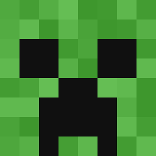

Tipos de criaturas
No jogo, as criaturas são chamadas de mobs. Elas se dividem em três grupos, de acordo com o comportamento:
- Passivas
- Não atacam. Você pode caçá-las ou criá-las para conseguir comida e materiais.
- Neutras
- Só atacam se forem provocadas. Evite irritar esse tipo de criatura.
- Hostis
- Atacam o jogador assim que o veem. Aparecem principalmente em locais escuros.

Tabela de criaturas
A vida é medida em pontos: cada coração na tela vale 2 pontos. Um jogador tem 20 pontos, ou seja, 10 corações.
| Criatura | Tipo | Vida | Itens que solta | Dica |
|---|---|---|---|---|
| Zumbi | Hostil | 20 | Carne podre | Costuma andar em grupo. Queima sob a luz do sol. |
| Esqueleto | Hostil | 20 | Ossos e flechas | Ataca de longe. Aproxime-se em zigue-zague ou use um escudo. |
| Creeper | Hostil | 20 | Pólvora | Ao ouvir o chiado, afaste-se. A explosão destrói blocos. |
| Aranha | Hostil à noite | 16 | Fio e olho de aranha | Escala paredes. Durante o dia, só ataca se for provocada. |
| Enderman | Neutro | 40 | Pérola do Ender | Não olhe diretamente para ele. Se ficar bravo, ele se teletransporta até você. |
| Vaca | Passivo | 10 | Carne de vaca e couro | Boa fonte de comida logo no começo do jogo. |
| Porco | Passivo | 10 | Carne de porco | Cozinhe a carne na fornalha para recuperar mais fome. |
| Ovelha | Passivo | 8 | Lã e carne de carneiro | Com uma tesoura, você coleta lã sem machucar a ovelha. Lã é ingrediente da cama. |
| Galinha | Passivo | 4 | Carne de frango, penas e ovos | Põe ovos de tempos em tempos, que podem ser usados em receitas. |
Principais biomas
Um bioma é uma região do mundo com clima, vegetação e criaturas próprios. Saber em qual bioma você está ajuda a decidir onde construir e o que procurar.
| Bioma | Aspecto | Recursos e criaturas | Dica |
|---|---|---|---|
| Planície | Terreno aberto e coberto de grama | Vilas, flores, cavalos e burros | Ótimo para montar a primeira base. |
| Floresta | Muitas árvores | Madeira em abundância e lobos | Marque o caminho de volta, é fácil se perder. |
| Deserto | Areia, quente e sem chuva | Cactos, coelhos, templos e vilas | Cuidado com armadilhas nos templos do deserto. |
| Taiga | Pinheiros e clima frio | Lobos, raposas e bagas doces | Boa região para domesticar lobos. |
| Selva | Vegetação densa e úmida | Bambu, cacau, papagaios e templos | O terreno é difícil de atravessar. Vá com calma. |
| Pântano | Água rasa e lírios | Slimes e cabanas de bruxas | À noite, slimes aparecem em grande quantidade. |
| Montanhas | Picos altos e rochosos | Minérios expostos e cabras | Cuidado com quedas e com terrenos escorregadios. |
| Oceano | Grandes áreas de água | Naufrágios, tesouros enterrados e golfinhos | Um barco é essencial para explorar. |
| Ilha de cogumelos | Terra de micélio, rara e isolada | Vacas-cogumelo | Monstros não aparecem naturalmente, então é um excelente lugar para uma base segura. |